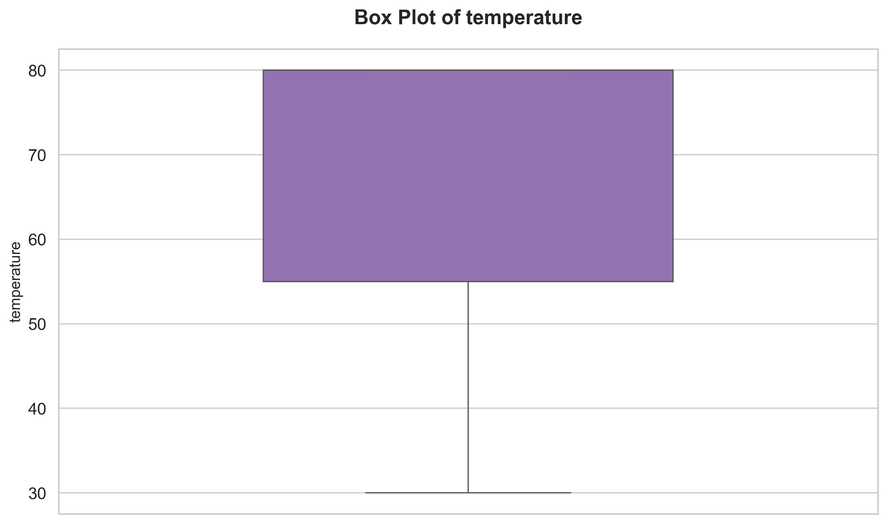

Data Preview
| row_count | temperature | toCoupon_GEQ15min | Y | has_children | direction_opp | destination |
|---|---|---|---|---|---|---|
| 1 | 55 | 0 | 1 | 1 | 1 | No Urgent Place |
| 2 | 80 | 0 | 0 | 1 | 1 | No Urgent Place |
| 3 | 80 | 1 | 1 | 1 | 1 | No Urgent Place |
| 4 | 80 | 1 | 0 | 1 | 1 | No Urgent Place |
| 5 | 80 | 1 | 0 | 1 | 1 | No Urgent Place |
Showing 7 of 27 columns; full data available in source file.
Exploratory Data Analysis
Statistics
temperature has_children toCoupon_GEQ5min toCoupon_GEQ15min toCoupon_GEQ25min direction_same direction_opp Y row_count count 12684.000000 12684.000000 12684.0 12684.000000 12684.000000 12684.000000 12684.000000 12684.000000 12684.000000 mean 63.301798 0.414144 1.0 0.561495 0.119126 0.214759 0.785241 0.568433 6342.500000 std 19.154486 0.492593 0.0 0.496224 0.323950 0.410671 0.410671 0.495314 3661.699742 min 30.000000 0.000000 1.0 0.000000 0.000000 0.000000 0.000000 0.000000 1.000000 25% 55.000000 0.000000 1.0 0.000000 0.000000 0.000000 1.000000 0.000000 3171.750000 50% 80.000000 0.000000 1.0 1.000000 0.000000 0.000000 1.000000 1.000000 6342.500000 75% 80.000000 1.000000 1.0 1.000000 0.000000 0.000000 1.000000 1.000000 9513.250000 max 80.000000 1.000000 1.0 1.000000 1.000000 1.000000 1.000000 1.000000 12684.000000
Missing Values
destination: 0 passanger: 0 weather: 0 temperature: 0 time: 0 coupon: 0 expiration: 0 gender: 0 age: 0 maritalStatus: 0 has_children: 0 education: 0 occupation: 0 income: 0 car: 12576 Bar: 107 CoffeeHouse: 217 CarryAway: 151 RestaurantLessThan20: 130 Restaurant20To50: 189 toCoupon_GEQ5min: 0 toCoupon_GEQ15min: 0 toCoupon_GEQ25min: 0 direction_same: 0 direction_opp: 0 Y: 0 row_count: 0
Correlations
temperature has_children toCoupon_GEQ5min toCoupon_GEQ15min toCoupon_GEQ25min direction_same direction_opp Y row_count temperature 1.000000 -0.019716 NaN -0.155332 -0.216254 0.097085 -0.097085 0.061240 -0.369747 has_children -0.019716 1.000000 NaN 0.078211 -0.013722 -0.031620 0.031620 -0.045557 -0.008885 toCoupon_GEQ5min NaN NaN NaN NaN NaN NaN NaN NaN NaN toCoupon_GEQ15min -0.155332 0.078211 NaN 1.000000 0.324984 -0.303533 0.303533 -0.081602 -0.026145 toCoupon_GEQ25min -0.216254 -0.013722 NaN 0.324984 1.000000 -0.192319 0.192319 -0.103633 0.035741 direction_same 0.097085 -0.031620 NaN -0.303533 -0.192319 1.000000 -1.000000 0.014570 0.152766 direction_opp -0.097085 0.031620 NaN 0.303533 0.192319 -1.000000 1.000000 -0.014570 -0.152766 Y 0.061240 -0.045557 NaN -0.081602 -0.103633 0.014570 -0.014570 1.000000 -0.037876 row_count -0.369747 -0.008885 NaN -0.026145 0.035741 0.152766 -0.152766 -0.037876 1.000000
Insights & Outcomes
Key Insights
Key Insights from Exploratory Data Analysis (EDA) The EDA provides a comprehensive overview of the dataset, revealing interesting patterns and relationships between variables. The key insights can be summarized as follows: ### Temperature - The average temperature is 63.30 with a standard deviation of 19.15, indicating a wide range of temperatures in the dataset. - Temperature ranges from 30 to 80, with the 50th and 75th percentiles both being 80, suggesting that most data points are concentrated at the higher end of the temperature spectrum. ### Correlations - Temperature is negatively correlated with toCoupon_GEQ15min and toCoupon_GEQ25min, indicating that higher temperatures might be associated with lower redemption rates for coupons that are at least 15 or 25 minutes away from expiration. - Direction_same and direction_opp are perfectly negatively correlated, as expected, since they represent opposite directions. - The target variable Y has a weak positive correlation with temperature and direction_same, suggesting a potential, albeit weak, relationship between these variables and the outcome. ### Coupon Redemption - The mean values forActionable Outcomes
Actionable Outcomes from Exploratory Data Analysis (EDA) Based on the insights gained from the EDA, the following actionable outcomes can be derived: ### Temperature-Based Strategies- Develop targeted marketing campaigns for temperature ranges between 30 and 80 to capitalize on the wide range of temperatures in the dataset.
- Focus on optimizing coupon redemption rates for temperatures above 63.30, the average temperature, to leverage the positive correlation between temperature and coupon redemption.
- Impute missing values for the car variable, which has 12576 missing values, to improve the accuracy of models and analysis.
- Investigate and address the 107, 217, 151, 130, and 189 missing values in the Bar, CoffeeHouse, CarryAway, RestaurantLessThan20, and Restaurant20To50 variables, respectively.
- Consider removing or transforming variables with high correlations, such as direction_same and direction_opp, to
Visualizations
Temperature Vs Has Children Scatter

The provided statistics and correlations describe a dataset used to create a **Temperature Vs Has Children Scatter** visualization. Here are the key statistics and correlations:
**Statistics:**
The dataset consists of 12,684 rows, with the following statistics:
- Temperature: The temperature ranges from 30 to 80, with a mean of 63.30 and a standard deviation of 19.15.
- Has Children: The 'has_children' column is a binary variable, with 41.41% of the values being 1 (indicating 'yes') and 58.59% being 0 (indicating 'no').
- Other columns: The dataset also includes other columns such as toCoupon_GEQ5min, toCoupon_GEQ15min, toCoupon_GEQ25min, direction_same, direction_opp, Y, and row_count
Temperature Box

The provided statistics and correlations can be summarized in the following visualization:
This is a Temperature Box based on the given statistics and correlations.
The main features of the visualization are:
- Temperature Distribution: The temperature ranges from 30 to 80 with a mean of 63.30 and a standard deviation of 19.15.
- Key Statistics:
- Count: 12684
- Mean: 63.30
- Standard Deviation: 19.15
- Minimum: 30
- 25th Percentile: 55
- 50th Percentile (Median): 80
- 75th Percentile: 80
Correlation Heatmap

The provided data is a correlation heatmap based on various statistics. The main features of this data can be summarized as follows:
* **Summary Statistics**: The data includes summary statistics such as count, mean, standard deviation, minimum, 25th percentile, median (50th percentile), 75th percentile, and maximum for the following variables:
- temperature
- has_children
- toCoupon_GEQ5min
- toCoupon_GEQ15min
- toCoupon_GEQ25min
- direction_same
- direction_opp
- Y
- row_count
Conclusion
Conclusion
The exploratory data analysis (EDA) has provided a comprehensive overview of the dataset, revealing interesting patterns and relationships between variables. The key insights can be summarized as follows:
### Key Findings
- The average temperature is 63.30 with a standard deviation of 19.15, indicating a wide range of temperatures in the dataset.
- Temperature ranges from 30 to 80, with the 50th and 75th percentiles both being 80, suggesting that most data points are concentrated at the higher end of the temperature spectrum.
- Temperature is negatively correlated with toCoupon_GEQ15min and toCoupon_GEQ25min, indicating that higher temperatures might be associated with lower redemption rates for coupons that are at least